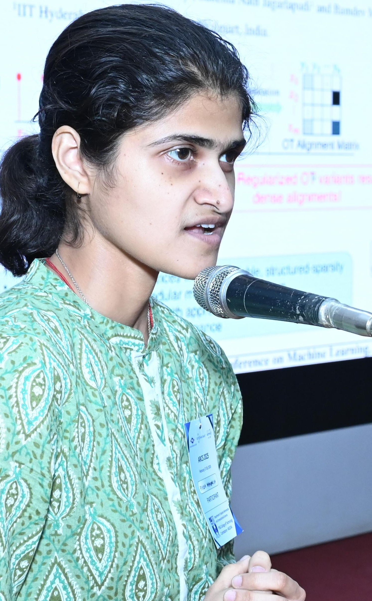

I am an ML postdoc, immensely fortunate to be working with Prof. Anant Raj on optimization & ML theory. Prior to this, I finished my M.Tech-PhD dual degree (Aug '18-Mar '25) from CSE IIT Hyderabad, during which I worked on research problems in Optimal Transport,
Kernel Methods, Bandits and on Deep Learning Interpretability.
CV provides additional details.
8 ★.
Multi-agent Multi-armed Bandits with Minimum Reward Guarantee Fairness
P Manupriya, Himanshu, JS Nath, G Ghalme
AAMAS 2025 (CORE A*) as an Oral
7 ★. Submodular framework for structured-sparse optimal transport
P Manupriya, P Jawanpuria, KS Gurumoorthy, JS Nath, B Mishra
ICML 2024 (CORE A*)
6. Stretched Exponential Convergence of (Stochastic) Gradient Descent for Separable Logistic Regression
S Kale, P Manupriya, P Marion, F Bach, A Raj
Transactions on Machine Learning Research (TMLR), 2026
5 ★. MMD-regularized unbalanced optimal transport
P Manupriya, JS Nath, P Jawanpuria
Transactions on Machine Learning Research (TMLR), 2024
Among the 100 papers invited at ICLR 2025 (CORE A*)
4. On the Generalization and Robustness in Conditional Value-at-Risk
D K Mulumudi, P Manupriya, G Aminian, A Raj
Under review.
3. Consistent optimal transport with empirical conditional measures
P Manupriya, RK Das, S Biswas, JS Nath
AISTATS 2024 (CORE A)
2. Neural network attributions: a causal perspective
A Chattopadhyay, P Manupriya, A Sarkar, VN Balasubramanian
ICML 2019 (CORE A*) as an Oral
1. Improving attribution methods by learning submodular functions
P Manupriya, TR Menta, JS Nath, VN Balasubramanian
AISTATS 2022 (CORE A) and ICML '20 workshops (XXAI - Poster, WHI - Spotlight)
ANRF-National Post Doctoral Fellowship (NPDF) grant 2025
50K USD Early-Stage Google PhD Fellowship in Machine Learning 2021
Ministry of Education (MoE) PhD Fellowship 2020
2021-Fall Prime Minister's Research Fellowship (conflict with Google PhD Fellowship)
2017 IASc-INSA-NASI Summer Research Fellowship, BIBL Lab, ISI Kolkata (pre-empted following a medical condition)
AI5030 Probability and Stochastic Processes & CS6660 Mathematical Foundations of Data Science (Fall '24)
Role: Tutorials (for AI5030); grading quizzes, assignments & exams
Course Instructor: Prof. P.N. Karthik
CS5590 Foundations of ML (Fall '22)
Role: Tutorials (theory & coding); grading quizzes, assignments & exams
Course Instructor: Prof. J. Saketha Nath
CS5580 Convex Optimization Theory (Fall '21 & '23)
Role: Grading quizzes
Course Instructor: Prof. J. Saketha Nath
CS5560 Probabilistic Models for ML (Spring '21 & '22)
Role: Grading quizzes
Course Instructor: Prof. J. Saketha Nath
CS5350 Bayesian Data Analysis (Spring '24)
Role: Grading exams
Course Instructor: Prof. Srijith P.K.
CS6510 Applied ML (Fall '19 & '20)
Role: Grading quizzes, assignments & exams
Course Instructor: Prof. Vineeth N Balasubramanian
Maths tutor (Dec '21 - Mar '22) for a batch of 3 Class-X students at the Aksharamaala Program.
Gautham Bellamkonda (IIT-H BTech CSE '24 batch)
Vanshika Mittal (IISc Predoc in Prof. Anant's lab)
G. Y. Srikrishna (IISc PhD student in Prof. Anant's lab)
Reviewer for NeurIPS '26, ICML '26, TMLR '26, ISIT '25, AISTATS '24
Sub-reviewer for NeurIPS ('23 & '20), ICML '20, ECCV '20, WACV '20, ICCV '19, ECML-PKDD '19
Volunteer for Women in ML (WiML) symposium at ICML '24 and for virtual conferences: NeurIPS ('20 & '21) and ICML '20